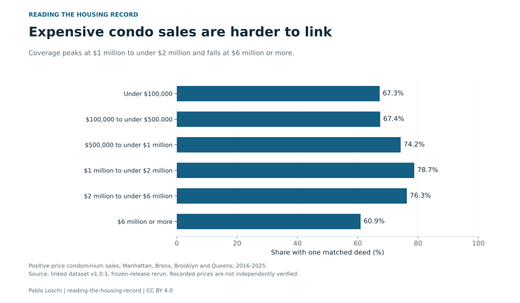
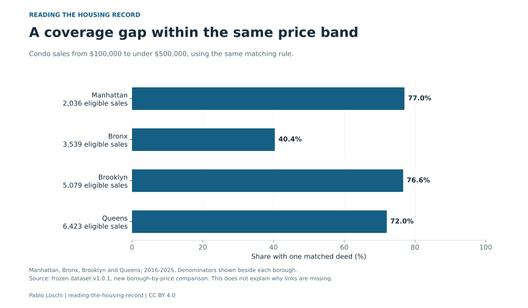

To compare cash and mortgage purchases, start with a list of condo sales, find their deeds and look for mortgages. The difficulty is that the deed match reaches very different shares of the market across New York City.
In a rerun of the released dataset, 78.9% of eligible Manhattan condominium sales link to one deed. In the Bronx, the figure is 44.7%.
Brooklyn reaches 74.6% and Queens 65.4%. All four boroughs use the same rules. A financing comparison drawn only from the linked records therefore starts with uneven coverage.
For this article, I reran the published selection example against the frozen sales and link tables. The exercise covers 126,251 condominium sales with positive recorded prices from 2016 to 2025 in the four boroughs covered by ACRIS. It reproduces the released counts and then compares coverage by location, year and price range.


Read the chart data as a table
| Group | Eligible | Unique | No match | Ambiguous | Unique link (%) |
|---|---|---|---|---|---|
| Manhattan | 59,647 | 47,061 | 8,303 | 4,283 | 78.90 |
| Bronx | 4,311 | 1,929 | 2,138 | 244 | 44.75 |
| Brooklyn | 39,514 | 29,496 | 6,525 | 3,493 | 74.65 |
| Queens | 22,779 | 14,900 | 5,064 | 2,815 | 65.41 |
What a missing link means
Of those eligible sales, 93,386 link to a unique deed. Another 22,030 have no deed that meets the matching rules. For 10,835, qualifying deeds appear on more than one unit lot, so the result is ambiguous and the sale is left unlinked.
A missing match means the rule found no qualifying deed in this snapshot. A deed may still exist. An ambiguous match means more than one unit qualified, so the rule could not choose one.
Condominiums create a particular join problem. The sales file's parcel identifier usually points to the building's billing lot. Deeds and mortgages refer to the individual unit. The linkage searches among unit lots on the same block, using amount and date, and retains a match only when the unit is unique.
That approach leaves financing unmeasured for 32,865 eligible condominium sales. A missing link gives us no basis for calling those purchases cash.
Similar prices, different borough mix
The median recorded price is about $1.01 million among uniquely linked sales and $950,000 among unlinked ones. Looking only at those medians might make the two groups seem broadly comparable.
Their geography differs. Manhattan accounts for 50.4% of linked sales and 38.3% of unlinked sales. Any statistic computed from the linked subset gives Manhattan a different weight from the full eligible sample.
Coverage also varies by price. It is highest, at 78.7%, for sales from $1 million to under $2 million. It falls to 60.9% at $6 million or more. The smallest positive-price records also have lower coverage, around 67%.



Read the chart data as a table
| Group | Eligible | Unique | Unique link (%) |
|---|---|---|---|
| 100k–<500k | 17,077 | 11,516 | 67.44 |
| 1m–<2m | 31,594 | 24,874 | 78.73 |
| 2m–<6m | 23,232 | 17,722 | 76.28 |
| 500k–<1m | 45,260 | 33,594 | 74.22 |
| <100k | 2,242 | 1,508 | 67.26 |
| >=6m | 6,846 | 4,172 | 60.94 |
Year-to-year changes are smaller: the unique-deed share ranges from about 72.0% to 76.3%. The large borough differences persist in the pooled comparison even though the overall annual rate looks fairly stable.
The gap also appears within a price range
Comparing boroughs within the same price range shows another gap. Among sales recorded from $100,000 to under $500,000, 1,429 of 3,539 Bronx sales link to a unique deed, or 40.4%. In Manhattan, 1,568 of 2,036 sales in that range link, or 77.0%.



Read the chart data as a table
| Borough | Eligible | Unique | Coverage pct |
|---|---|---|---|
| Manhattan | 2,036 | 1,568 | 77.01 |
| Bronx | 3,539 | 1,429 | 40.38 |
| Brooklyn | 5,079 | 3,893 | 76.65 |
| Queens | 6,423 | 4,626 | 72.02 |
The price ranges do not make the properties or transactions identical. This comparison does show that the pooled borough gap is not simply a comparison of expensive Manhattan homes with cheaper Bronx homes. The Manhattan coverage rate also exceeds the Bronx rate in every year from 2016 to 2025; the annual gap ranges from 26.7 to 41.1 percentage points.
The denominator behind a cash share
In 2021, for example, 8,425 of 12,760 uniquely linked condominium sales have a mortgage recorded within the base matching window. That gives a recorded-mortgage share of 66.0% among linked sales. Financing is unmeasured for the other 4,974 eligible sales that year.
The window runs from 15 days before the sale to 90 days afterward. A mortgage found in it still needs instrument-level evidence to establish purchase financing. The 66.0% figure describes a recorded match in the linked subset, not a verified mortgage share for every condominium buyer.
This analysis does not identify why each link is missing, prove that City records are defective or estimate misconduct. It does not supply weights that make the linked subset represent all sales. Staten Island is outside ACRIS, and nonpositive prices are excluded from this linkage comparison.
A borough financing comparison needs both numbers: the share of sales that linked and the mortgage-match rate within that group. Readers can then see how much of the market the comparison covers.
Sources and methods
This article explains Pablo Loschi's own research. The figures use the unchanged data and examples from dataset version 1.0.1. Version 1.0.2 updates the documentation. Read the dataset documentation. All versions on Zenodo.
Dataset v1.0.1. The released condo_selection.py and recorded_mortgage_example.py were rerun on the frozen files on 1 October 2026. An additional script computes the borough-by-price cells and annual Manhattan/Bronx coverage gaps. Descriptive counts cover this snapshot; no sampling confidence interval or causal explanation is claimed. Group summary CSV · Annual coverage and mortgage-match CSV · Annual borough gap CSV.
New article text and original graphics: CC BY 4.0. Credit Pablo Loschi, NYC Housing Data; retain the source and sample, and identify edits. Underlying research releases retain their own terms.